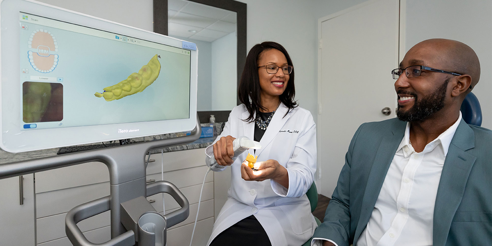

our facilities

Comfortable Patient Amenities
: Medium-sized dental clinics often focus on providing a comfortable and welcoming atmosphere for patients.
This may include comfortable waiting areas with amenities such as soothing decor, a variety of reading materials, and entertainment options.
In the treatment rooms, patients might find features like ergonomic dental chairs, TV screens or music for distraction during procedures, and options
for sedation or anesthesia to manage anxiety and discomfort. more......
This may include comfortable waiting areas with amenities such as soothing decor, a variety of reading materials, and entertainment options.
In the treatment rooms, patients might find features like ergonomic dental chairs, TV screens or music for distraction during procedures, and options
for sedation or anesthesia to manage anxiety and discomfort. more......

CLINIC doctors team
1. Dentist (General or Family Dentist): The primary dental care provider who diagnoses, treats, and manages overall oral health. General dentists perform routine check-ups, cleanings, and offer various treatments such as fillings, extractions, and crowns.
2.Orthodontist: Specializes in the correction of misaligned teeth and jaws.
They provide treatments like braces and Invisalign to straighten teeth.
3.Oral Surgeon: Performs surgical procedures related to the mouth, teeth, and jaw,
including wisdom teeth extraction, dental implants, and corrective jaw surgery.
4.Periodontist: Focuses on the prevention, diagnosis, and treatment of gum diseases.
They perform procedures such as gum grafts and scaling and root planing.
5.Endodontist: Specializes in root canal therapy, treating diseases or injuries to the dental pulp.
They save teeth that might otherwise need to be extracted.
2.Orthodontist: Specializes in the correction of misaligned teeth and jaws.
They provide treatments like braces and Invisalign to straighten teeth.
3.Oral Surgeon: Performs surgical procedures related to the mouth, teeth, and jaw,
including wisdom teeth extraction, dental implants, and corrective jaw surgery.
4.Periodontist: Focuses on the prevention, diagnosis, and treatment of gum diseases.
They perform procedures such as gum grafts and scaling and root planing.
5.Endodontist: Specializes in root canal therapy, treating diseases or injuries to the dental pulp.
They save teeth that might otherwise need to be extracted.

Advanced Dental Technology:
Medium-sized dental clinics invest in state-of-the-art dental equipment and technology.
This may include digital X-ray machines, intraoral cameras, laser systems for various dental procedures,
and computer-aided design and computer-aided manufacturing (CAD/CAM) systems for creating crowns and dental restorations.
The use of advanced technology ensures accurate diagnostics, minimally invasive treatments, and efficient dental care.
This may include digital X-ray machines, intraoral cameras, laser systems for various dental procedures,
and computer-aided design and computer-aided manufacturing (CAD/CAM) systems for creating crowns and dental restorations.
The use of advanced technology ensures accurate diagnostics, minimally invasive treatments, and efficient dental care.
world dental News
what our customer say
customer ...
.jpg)
:
"I can't thank the team at this dental clinic enough! From the moment I walked in, I felt welcomed and at ease.
They made my dental treatment painless and efficient.
The results exceeded my expectations, and I now have a beautiful, healthy smile.
I'll be coming back for all my dental needs!"
Testimonial 1
"I had a fantastic experience at this dental clinic! The staff was friendly, and Dr. MERAF was extremely gentle and knowledgeable. My fear of dental visits has vanished, thanks to their care and expertise. I highly recommend this clinic to anyone in need of top-notch dental care.